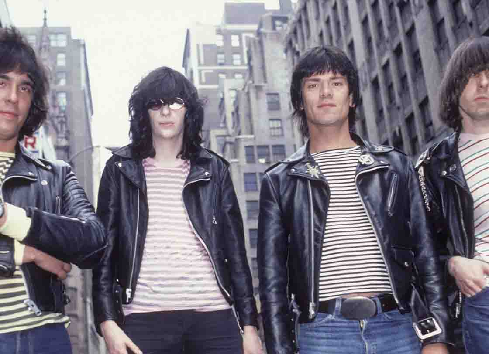

RAMONES: “Road to Ruin” 40° Aniversario Edición Deluxe
Los Ramones lanzaron el cuarto álbum de estudio de la banda, Road To Ruin, hace 40 años en septiembre. Dee Dee, Joey y Johnny se unieron por primera vez al baterista Marky Ramone, quien reemplazó al miembro fundador Tommy Ramone, quien se había ido para hacer más producción y escritura para la banda. También fue el álbum que introdujo una nación de cabezas de alfiler al clásico de todos los tiempos de Ramones "I Wanna Be Sedated".
Para celebrar el hito, Rhino lanzará dos versiones el 21 de septiembre, un día antes del aniversario del lanzamiento original del álbum el 22 de septiembre de 1978. El set en caja de 3CD / 1LP ROAD TO RUIN: 40º ANIVERSARIO EDICIÓN DE LUJO estará disponible por $ 64.98. Una versión recientemente remasterizada del álbum original también se lanzará como un solo CD por $ 7.98. Ambos títulos también estarán disponibles digitalmente y a través de servicios de transmisión.
ROAD TO RUIN: 40th ANNIVERSARY DELUXE EDITION contiene dos mezclas diferentes del álbum, mezclas en bruto no emitidas para cada pista del álbum y una grabación inédita de conciertos de los Ramones en 1979 en Nueva York. Se producirá en una edición limitada y numerada de 7.500 copias en todo el mundo y viene empaquetada en un libro de tapa dura de 12 x 12. Junto con la música, el set también presenta fotos y obras de arte raras, incluida la imagen de portada alternativa no utilizada, además de ensayos del ex escritor de Rocker de Nueva York Roy Trakin, el artista de portada del álbum John Holmstrom y el productor de Road To Ruin Ed Stasium, quien detalla el haciendo de este disco clásico.
El primer disco de ROAD TO RUIN: 40th ANNIVERSARY DELUXE EDITION presenta una versión remasterizada de la mezcla estéreo original para Road To Ruin y una nueva mezcla de 40th Anniversary Road Revisited 2018 creada por Stasium, que elimina el brillo comercial del disco original y restaura el álbum a su núcleo punk rock. La nueva mezcla de Stasium también aparece en el LP de 180 gramos que acompaña a esta edición de lujo.
El segundo disco ofrece más de veinte grabaciones inéditas, incluidas mezclas aproximadas para cada pista del álbum, tomas alternativas muy diferentes de dos canciones y dos tomas inéditas: "I Walk Out" y "S.L.U.G." - Inacabado durante las sesiones de grabación originales en 1978, y completado por Stasium para este lanzamiento de aniversario. Otros aspectos destacados incluyen tres versiones diferentes de "I Wanna Be Sedated", que incluye "Ramones-on-45-Mega-Mix!" lanzado en 1988 como parte de la campaña para la compilación Ramones Mania, así como versiones acústicas de "Questioningly", "Needles And Pins" y "Don’t Come Close".
El disco final tiene una grabación inédita de todo el concierto de la víspera de Año Nuevo de 1979, que fue mezclado en vivo por Stasium y transmitido por WNEW-FM. Grabado en la ciudad de Nueva York en The Palladium, con audio procedente del cassette original de Tommy Ramone de la grabación de la consola, presenta interpretaciones impactantes de "Blitzkrieg Bop", "Rockaway Beach" y "Sheena Is A Punk Rocker", junto con varias canciones de Road To Ruin.